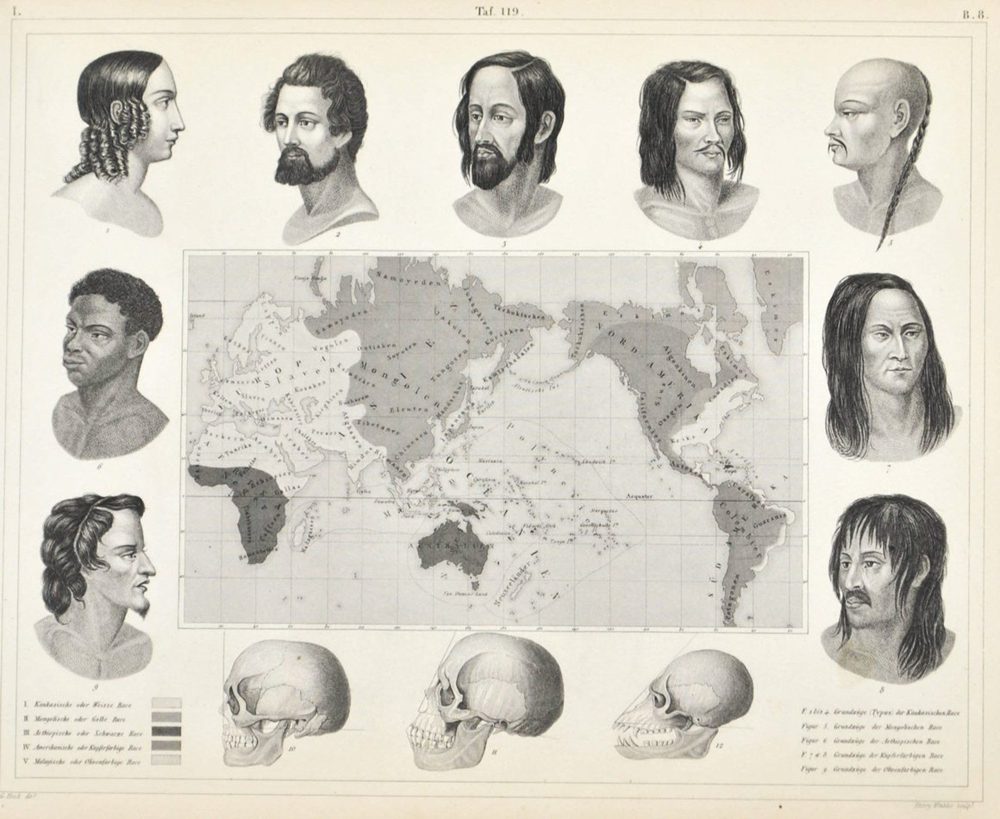
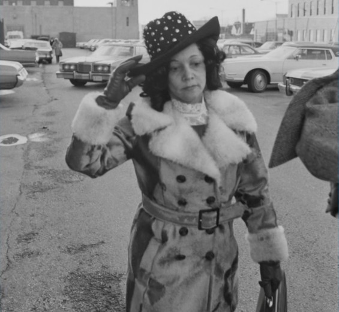

La haine de l'Autre : de la science à la culture, 18e-21e siècle
La justification par la science (18e-20e siècle)
Au cours du 18e siècle, une nouvelle justification de la haine de l'Autre apparaît dans les milieux scientifiques et philosophiques. L'idée de progrès va transformer les dégénérés en arriérés : on commence à penser qu'au début, tous les hommes étaient semblables aux Indiens d'Amérique. Ce qui explique la différence entre les Européens et les Indiens d'Amérique n'est plus la dégénérescence de ces derniers à partir d'un Adam blanc, mais le progrès des Européens à partir du stade de la chasse et de la cueillette. Parallèlement, les milieux religieux continuent pendant très longtemps à utiliser la notion de dégénérescence.

Le racisme scientifique apparaît à la fin du 18e siècle, à partir du moment où le raisonnement généalogique de la race commence à être intégré aux classifications de l'histoire naturelle. Deux conceptions de l'origine des races s'opposent au 18e : le monogénisme et le polygénisme. Selon les monogénistes, tous les hommes ont une origine commune mais des races différentes se sont formées par accident au fil du temps par transmission à tous les descendants des qualités ou des défauts apparus chez un ancêtre. Cette vision est clairement dans la continuité de la vision chrétienne de la dégénérescence, mais elle remplace les malédictions bibliques par des raisonnements biologiques. Selon les polygénistes, il y a une différence radicale dès le départ entre les races humaines, qui seraient des lignées entièrement séparées. C'est par exemple la position de Voltaire. On trouve autant de haine généalogique chez les monogénistes que chez les polygénistes. Dans la plupart des cas le résultat final est de déclarer qu'il y a une hiérarchie des races humaines, dont les Blancs seraient le sommet.
La théorie dominante depuis l'antiquité grecque expliquait les variations de couleur de peau par la variation des climats. Les contre-exemples s'accumulent au 18e siècle : on réalise que les Africains vivant en Europe gardent la peau noire et leurs enfants conçus en Europe aussi. On découvre l'existence des albinos, qui peuvent naître de deux parents noirs mais ont la peau claire et un aspect physique différent des Européens. On découvre aussi l'existence du vitiligo, maladie qui entraîne la dépigmentation progressive de la peau. Tout cela conduit des scientifiques à chercher des explications différentes, et à ne plus chercher la définition de la race à la surface de la peau mais dans les os, en particulier dans les crânes.
De la fin du 18e siècle à nos jours, on a successivement cherché des marqueurs biologiques de la race dans différents domaines. On part d'un trait qui est censé isoler des groupes hermétiquement fermés. Or on découvre à chaque fois un gradient qui fait exploser les frontières nettes entre les groupes. Du 18e siècle aux années 1940, on cherche surtout les marqueurs dans les crânes. À partir de 1900, avec la redécouverte des travaux de Mendel et la mise en évidence des groupes sanguins, on se met à chercher des marqueurs raciaux plus fiables dans les analyses de sang. À partir des années 1980, ces recherches sont éclipsées par les analyses ADN. Dans chaque cas, le consensus scientifique finit par établir qu'il n'y a pas de races mais des gradients. Cela n'empêche pas une partie du public d'affirmer que la science justifie l'existence des races.
La justification par la culture depuis les années 1960
Dès le début de la 2e guerre mondiale, des anthropologues américains et français proposent de remplacer la hiérarchie des races par la diversité des cultures. Cela devient le discours officiel de l'UNESCO à la fin des années 1940. Ils pensent qu'il suffit d'éduquer la génération future à l'antiracisme sans toucher à la structure sociale pour que le racisme disparaisse.
Le discours des anthropologues qui préfèrent parler de culture plutôt que de race est renversé par des penseurs de droite en Europe et aux États-Unis au cours des années 1960 pour refonder un discours raciste. Ils remplacent alors la référence à la race par la référence à la culture. Les défauts qu'on expliquait par la race sont maintenant justifiés par des phrases comme « C'est dans leur culture ». On en arrive ainsi à un racisme sans race, qui ouvre la porte à tous les euphémismes pour désigner les races sans jamais les nommer. Nous allons voir d'abord l'évolution de cette situation aux États-Unis avant de nous intéresser à ce qui se passe en Europe.
a) Le nouveau vocabulaire du racisme aux États-Unis
Les États-Unis pratiquent encore la ségrégation raciale après la deuxième guerre mondiale, ce qui devient très embarrassant dans leurs relations avec les pays nouvellement indépendants. Dans le contexte de la décolonisation, l'accès aux ressources des pays nouvellement indépendants nécessite de bonnes relations avec les nouvelles élites, qu'on ne peut plus classer si facilement dans des hiérarchies raciales. On ne peut plus non plus refuser l'entrée au restaurant à New York à des diplomates noirs qui siègent à l'ONU.
De 1955 à 1965, les Noirs Américains se mobilisent dans le mouvement des droits civiques, avec une stratégie largement non violente. Contrairement aux périodes précédentes, il est possible de voir se répéter très régulièrement à la télévision des scènes de violence extrême pendant la répression contre ce mouvement. Cela finit par dégoûter une partie de la population blanche du Nord des formes les plus extrêmes de racisme.
Les hommes politiques américains des années 1960 prennent conscience qu'il y a un coût électoral à afficher un discours raciste trop ouvert car les électeurs du Nord des États-Unis ne l'acceptent plus. La stratégie électorale gagnante consiste à trouver des moyens détournés d'exprimer des idées racistes pour gagner les électeurs du Sud sans dégoûter les électeurs du Nord. Nixon est élu en 1968 avec le slogan Law and Order qui vise les Noirs et les minorités sans jamais les mentionner. Ce slogan fonctionne parce qu'il désigne implicitement ces communautés comme criminelles. Quand le parti républicain dénonce l'État-providence, l'idée sous-jacente est que les Noirs seraient les principaux bénéficiaires des aides sociales et qu'ils les dépenseraient très mal.

b) Le nouveau vocabulaire du racisme en France
Pendant assez longtemps, en France, contrairement aux États-Unis, le racisme n'est pas un enjeu politique direct. Il y a toutes sortes de discrimination à l'embauche ou sur les questions de logement, mais il y a un grand malaise sur l'histoire coloniale de la France et les rapports avec les anciens sujets des colonies.
Avec la décolonisation, la France se réinvente une histoire et une identité débarrassées du passé colonial, comme s'il n'y avait jamais eu d'empire. Pour retrouver une image d'innocence de ses ancêtres, le vocabulaire se transforme. Les anciens sujets de l'empire colonial deviennent des immigrés puis des populations issues de l'immigration ou des migrants, mais ces mots ne s'appliquent qu'aux gens de couleur et pas aux migrants Blancs : cela devient une nouvelle façon de parler de race sans prononcer le mot. Les Blancs qui vont travailler dans les anciennes colonies deviennent des expatriés, pas des migrants.
Un certain malaise s'installe autour du mot « jaune », qui est remplacé par « asiatique » ou « chinois ». Des expressions comme « jeune de banlieue », « racaille » ou « assistés » permettent de parler de race sans évoquer de catégorie raciale précise. On oppose les Français de souche aux Français de papier pour dire qu'un Français de couleur n'est jamais vraiment un Français à part entière.
À partir des années 1980, le Front National remporte de nombreux succès électoraux. La droite française apprend dans ces années à exprimer un racisme codé pour parler à l'électeur du Front National sans dégoûter les électeurs de centre droit. On en arrive avec une quinzaine d'années de décalage à une situation très semblable à celle des États-Unis.
L'expression « je ne suis pas raciste mais… » devient le joker pour exprimer ses idées sans être moralement condamné, son usage devient de plus en plus courant en France et aux États-Unis. Une autre possibilité est de prétendre faire preuve d'humour, par des blagues racistes suivies de « mais c'était pour rire ». Les pays occidentaux adoptent progressivement une nouvelle norme sociale : la colorblindness, qui consiste à prétendre qu'on ne voit pas la race, qu'on n'en tient pas compte dans la vie. Dans cette logique nouvelle, ne pas parler de la race suffirait par magie à faire disparaître le racisme et ses conséquences sociales.
En conclusion, la haine de l'Autre a pris des formes différentes depuis 500 ans, en étant justifiée d'abord par la religion puis par la science et enfin la culture, mais elle n'a jamais disparu.